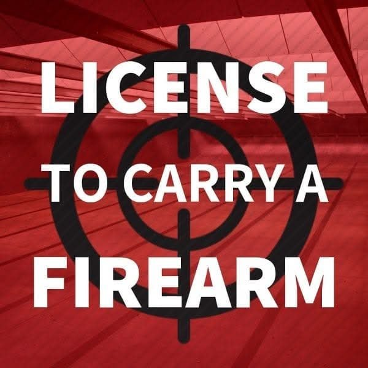
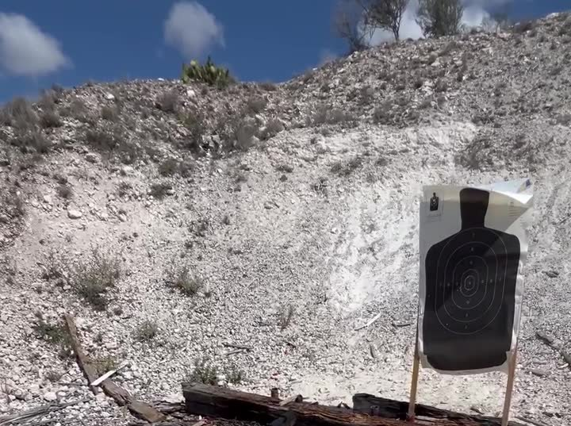

Home › The LTC Class
Classroom, written exam, and the state range qualification — usually a weekend morning starting at 9am, right here in Del Rio. Here's exactly what happens and what you need to bring.
Part one
The Texas DPS curriculum, taught by someone who has been through it thousands of times and can tell you what the words actually mean in real life.
Bring your questions. Home defense scenarios, what happens if you draw and don't fire, what to say to a responding officer, whether your carry setup is actually legal at work — all of it is fair game.


Part two
The state shooting proficiency demonstration — 50 rounds, three distances, one B-27 silhouette. It is a marksmanship standard, not a tactical test, and it is very passable.
| Distance | Rounds | What it looks like |
|---|---|---|
| 3 yards | 20 | Close, deliberate, from the ready |
| 7 yards | 20 | The bulk of the course of fire |
| 15 yards | 10 | The one people worry about — and rarely the one that costs them |
If you're brand new, we don't just hand you a gun and a scorecard. Basic instruction comes first — grip, stance, sight picture, trigger — at no extra cost. Other instructors will make you pay $200 before you even take the LTC course.
The Handgun Owner Foundations bundle — twelve short online courses, three to four hours total — covers safe handling, marksmanship fundamentals, holsters, storage and the legal side before you ever get to class. Optional, but the students who do it get more out of the range day. See all the online courses →
Rentals are available and they include ammunition. Range qualification is charged separately from the course, and that charge covers range use, your target, ammunition, and the rental if you need one. I've kept it fairly affordable on purpose — message me and I'll break the whole thing down for you.
Come prepared
A valid Texas driver's license or state ID. You'll need it for the application to DPS anyway, so get in the habit now.
Semi-auto or revolver, unloaded and cased. Bring the holster you actually intend to carry with — not the one still in the package.
Factory ammunition in your caliber. Bring extra — nobody has ever regretted having another box in the truck. Renting? It's covered.
Safety glasses and hearing protection. Electronic muffs are worth it if you have them; plugs plus muffs is even better out on the line.
This is Del Rio and the range is outdoors. A brimmed hat, sunscreen, closed-toe shoes and more water than you think you need.
If you're missing something, say so before class instead of quietly stressing about it. We sort it out. That's the whole point of a small class.
No low-cut shirts on the firing line — hot brass finds the worst possible place to land. Closed-toe shoes, and a shirt you don't mind getting dusty.
Eligibility
The state sets the rules; I just make sure you walk in knowing them. If you're not sure whether something in your history disqualifies you, ask before you pay a state application fee — that conversation is free.
You must be at least 18 to obtain a License to Carry from the state of Texas. Yes — 18, not 21.
Eligible to purchase and possess a handgun under state and federal law, with no disqualifying convictions, protective orders or delinquencies.
Texas residents and qualifying non-residents can both apply. Military stationed here, that includes you.
After class
Signed by your instructor, and it's what the state wants to see. Keep it somewhere you'll actually find it again.
Online application, fingerprints, and the state fee — paid to DPS, not to me. I'll walk you through the steps so nothing gets kicked back.
Then you're carrying legally in Texas and in 37 or more other states through reciprocity. Keep training. The license is the beginning, not the finish line.
Most classes are half full before they're even announced. Send a message, ask anything, and I'll get you booked.